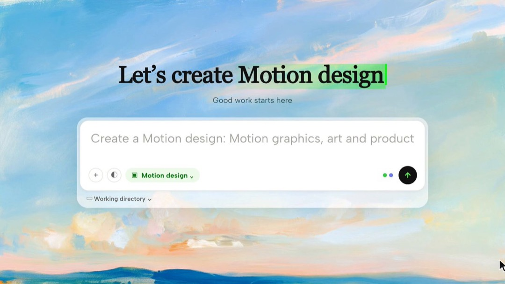
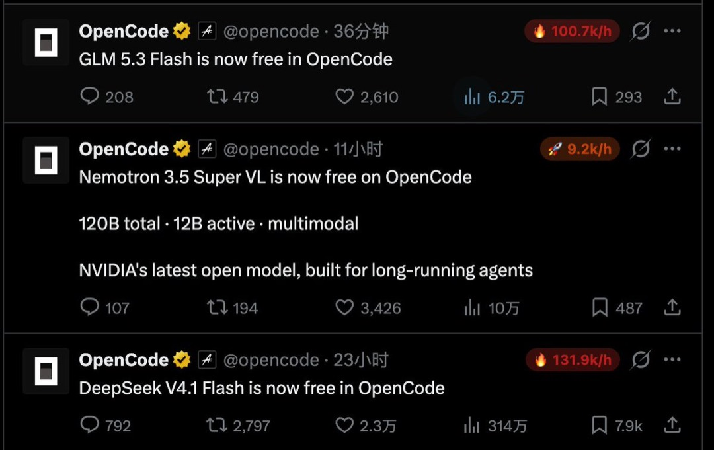

本期速览
01 AIPOCH Open-Science验证跨Agent数据交接
02 混元Hy Memory三层全开源做Agent记忆
04 Earshot为AI视频生成提供音效质检
06 人大EvoOntology让Agent自维护数据本体
01｜AIPOCH Open-Science验证跨Agent数据交接
来源（X） · @0xlangeai · 2026-10-16 16:14
公开数据集测不了。Wisconsin 乳腺癌那套，你一个文件都不给，Codex 自己从 UCI 拉下来照样算对。官方演示用的也是它，会话里 print 过的统计还躺在 records.json 里，照抄也能答对。
换任何号称可移植的格式，都该这么验一遍。
引用内容
阿良｜AI 工作流 @RealYDT
那我就挑一个最能证伪这句话的地方来测：一个项目做到一半，能不能原样交到另一个人手里。
但要测这个，得先堵一个洞，怎么确认接手的那一方是真读了你给的东西，而不是自己另有来路。
于是我先做了个对照。一个文件都没给，我问 Codex：加载并整理 Wisconsin 乳腺癌数据集为本地 CSV，然后告诉我：总记录数、原始特征数、恶性与良性各多少条、mean radius 的中位数分别是多少。
2 分 50 秒，它自己从 UCI 下下来算完了，569 / 30 / 212 / 357，中位数 17.325 和 12.200，全对。
拿公开数据集做的 AI 演示，默认证明不了它有没有读你给的东西，除非它专门堵死"模型自己就能拿到"这条路，上面那句你现在就能原样丢给任何一个联网 agent，自己验。
而 Open-Science 的官方演示，用的正是 Wisconsin。
拆开它的 .science 包还有第二层：会话里 print 过的统计结果，全都以文本躺在 records.json 里，照着抄也能答对。
两层都堵死才能真测，我自己造了 437 条数据，模型不可能见过；再挑四个会话里从没算过的数，只有真打开那份原始表格才答得出来的那种，真值先封存，再把包丢给 Codex。
两轮全中，第二轮它甚至走的是包里另一份副本，答案一样，包里 49 条校验和我也逐条重算过，全对。
数据确实跟着包走了， 范围是 Full 档、单会话、46 个文件、6.3 MiB—官方文档自己写了体积和内容有上限，大项目我没测。
能带走的一句：跨 agent 交接，要验的是数据有没有跟过来，不是对话有没有跟过来，这是条验法，不是对某个格式的结论，换任何号称可移植的格式，都该这么验一遍。
他们自己的说法是science, open to all。
这句话能不能落地，落在一个特别具体的地方：你的项目能不能交到另一个人手里，而且数据跟着一起走。
这次它带了。
Apache-2.0，本地优先，mac / Win / Linux：https://github.com/aipoch/open-science
02｜混元Hy Memory三层全开源做Agent记忆
来源（X） · @hungryturbo · 2026-10-16 22:00
框架是业界首创的工作与代码记忆，支持聊天，工作，代码三类记忆的存储和进化，可以通过 SDK 接入 Agent。
模型是 Hy-Memory-30A3B，约 3B 激活参数的记忆专用模型，跨 4 套主流记忆系统测试均分 55.49，超越 Opus5，DeepSeek V4.1 Flash 和 Qwen3-30B-A3B。
应用是 MemHub，提供了 CLI 和 Mac 端 APP，支持导入历史会话，打通 Cursor、Codex、WorkBuddy 等 10 种 AI 工具实时共享本地记忆。
在与业界方案的对比中，Hy Memory 在工作记忆，代码记忆和聊天记忆三大场景下，均以极小的存储空间占用取得开源框架第一。
目前已经在腾讯内部多个领域落地，腾讯自选股中综合得分从 64.3 提升至 79.6，多跳召回提升 40 个百分点。
iWiki 仅用召回记忆作答，正确率比提供全部原始对话相对提升 48.6%，腾讯新闻长期偏好理解评测均分达 91.68 分。
引用内容
Tencent Hy @TencentHunyuan
中文译文
🚀 Hy Memory 2.0 已发布 —— 开源模型、框架及 MemHub。
你的私有记忆管家。
框架处理聊天、工作和代码记忆。
在4个基准测试中排名第一。
Hy-Memory-30B-A3B 在各大框架中超越 Opus 5。
MemHub（CLI + Mac）支持跨10+个AI工具同步。
💻➡️
🔗 SDK & MemHub: https://github.com/Tencent-Hunyuan/Hy-Memory
🔗 模型: https://huggingface.co/tencent/Hy-Memory-30B-A3B#Hunyuan #HyMemory #AgentMemory
原文
🚀 Hy Memory 2.0 is out — open-source model, framework, and MemHub.
Your private memory steward.
Framework handles chat, work & code memories.
#1 open-source on 4 benchmarks.
Hy-Memory-30B-A3B beats Opus 5 across major frameworks.
MemHub (CLI + Mac) syncs across 10+ AI tools.
💻➡️
🔗 SDK & MemHub: https://github.com/Tencent-Hunyuan/Hy-Memory
🔗 Model: https://huggingface.co/tencent/Hy-Memory-30B-A3B#Hunyuan #HyMemory #AgentMemory

03｜OpenDesign Motion开源动效视频替代方案
来源（X） · @tuturetom · 2026-10-16 18:39
正式推出 OpenDesign Motion，做出顶尖的动效视频，不应该只能用 Opus 5.5。现在，你可以用自己喜欢的模型和 Agent，在 OpenDesign 里完成。
这条发布视频，就是我们用 DeepSeek v4.1 Flash 在 OpenDesign 里做的 ↘️

引用内容
OpenDesign @OpenDesignHQ
中文译文
隆重推出 OpenDesign Motion。
Claude Motion 的开源替代方案。
使用任意智能体、任意模型创建精美的动态视频。无需 Opus 5.5。
整个发布视频均在 OpenDesign 中制作。
更多演示见下方 ↓
原文
Introducing OpenDesign Motion.
The open-source alternative to Claude Motion.
Create beautiful motion videos with any agent, any model. No Opus 5.5 required.
This entire launch video was made in OpenDesign.
More demos below ↓
04｜Earshot为AI视频生成提供音效质检
来源（X） · @LinearUncle · 2026-10-16 17:04
举个例子：假设 AI 正在制作一段 30 秒的软件发布视频：
1. AI 找到十几个鼠标点击音效
2. Earshot 选出最符合“柔和、精致点击声”的几个
3. Earshot 从长录音中截出干净片段
4. 视频完成后，它检查点击声有没有和按钮按下的画面对齐。
5. 最后检查整体音量、结尾、音乐和音效密度，并给出具体修改时间点
因此，它更像是：
音频检测仪 + 音效搜索助手 + 视频声音质检工具
https://github.com/Leonxlnx/earshot
引用内容
Leon Lin @LexnLin
中文译文
隆重推出 earshot
Opus 5.5 可以用代码构建整个发布视频，但音效依然粗糙。
所以我们打造了 earshot。它是给 AI 编程智能体装上的耳朵。它们现在可以听到声音、评判声音，甚至自己制作出优质的声音。
这段视频中的每一个声音都是用代码制作的。
（请开启声音！！）
原文
Introducing earshot
Opus 5.5 can build a whole launch video in code but still produces sloppy sfx.
so we built earshot. it's ears for AI coding agents. they can now hear sounds, judge them and even make their own good sounds.
every sound in this video was made with code.
(sound on!!)
05｜OpenCode内置15个限时免费模型
来源（X） · @xiangxiang103 · 2026-10-16 15:27
我宣布：每个人，都必须装一个 OpenCode！！！
不是我吹，是它现在离谱到不装就亏👇
OpenCode 官方免费栏现在挂着 15 个限时免费模型：
🆓 DeepSeek V4.1 Flash
🆓 智谱 GLM-5.3-Flash
🆓 NVIDIA Nemotron 3.5 Super VL / Lightning / 3 Ultra
🆓 小米 MiMo-V2.6-Flash
🆓 美团 LongCat 2.5 Preview
🆓 还有一堆神秘模型：Big Pickle、Space Bunny……
一个软件，一堆国产+国际模型，随便切，一分钱不花🤯
装法就一行：
curl -fsSL https://opencode.ai/v2/install | bash
装完敲 /models，挑带 Free 的就行
⚠️ 坐下前听我说两句：
1、全是限时免费，官方没写截止日，薅要趁早
2、有几个免费期会拿数据改进模型，公司代码和隐私别往里丢

06｜人大EvoOntology让Agent自维护数据本体
来源（X） · @Ryrenz · 2026-10-16 22:40
论文拿下了 Hugging Face Daily Papers 当日第一。
用 AI 查过公司数据的人都踩过这个坑：问一句“上季度复购率多少”，Agent 先把表结构翻一遍，再猜 uid 和 user_id 哪个才对，“复购”怎么算也靠猜。猜错了，算出来的数还挺像那么回事。
常见的补救是写一份数据字典塞进 prompt。论文专门测了这招：同样的语义信息整段塞进上下文，Claude-Sonnet-5 的得分不升反降，掉了 15 分。
EvoOntology 的做法是让 Agent 自己维护这本说明书：
1️⃣ 先从你要问的问题出发，把指标定义、表之间的关系、业务约束整理成一层本体，每一条都拿真实数据验证过才入库
2️⃣ 用的时候通过 MCP 按需查，这一步需要哪个概念就取哪个，不往上下文里硬塞
3️⃣ 每次跑完任务，它会看 Agent 在哪一步出了错，只改出问题的那一小块。新版本要在同样的模型、同样的数据上跑赢旧版才会上线，跑不赢就继续用旧版
同一个 Claude-Sonnet-5 换成这种用法，得分涨了 8.8 分，和整段塞 prompt 一来一回差了将近 24 分。GPT-5.5 在 DDR-Bench 上更夸张，涨了 26.7 分。
Claude Code 和 Codex 都有现成插件，不用 clone 仓库，也不用另配 Python 环境。
模型权重一个没动，变强的是 Agent 手里那本数据说明书。
GitHub：https://github.com/ruc-datalab/EvoOntology
论文：https://huggingface.co/papers/2609.15779